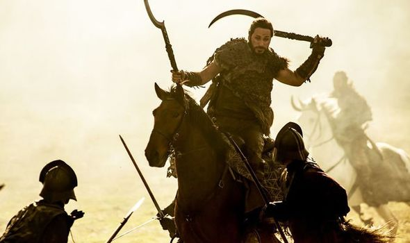

Dothraki
Dothraki

Used by the Dothraki people
Cases:
Nominative, Accusative, Genitive, Ablative, Allative
Allative: expresses motion to or toward.
Not many languages use the allative case, one of the few surviving is Lithuanian,
which is thought to be the oldest surviving Indo-European-Language. Lithuanian
is descended from the Slavic branch of Balto-Slavic.
Dothraki
is placed as descended from the Baltic branch of
Balto-Slavic language because of the presence of allative case.
In Lithuanian, the allative suffix is -op. The allative is rarely used un the
modern Lithuanian language, but can be found in certain old expressions:
- išėjo Dievop: "gone to God" (died)
- Elniop!: “to hell!”
In Dothraki, the allative suffix is “at”
- Eme: Smile: eme
- Emat: To smile at
Basic word order:
Subject Verb Object
Verbs: Stative, dynamic, causative
Noun classes:
inanimate and animate
Verbs conjugated for meaning:
For example: first person present tense conjugation, or past tense conjugation
Noun adjective structure: TODO
Influence of High Valyrian on Dothraki Vocabulary:
Zaldrīzes is the Valyrian word for dragon. The Targaryans are heavily connected to dragons: they raise them, ride them, and the dragon is their sigil.
The Dothraki word for ‘dragon’ is 'zhavvorsa'. Conversely to the Targaryans,
the Dothraki have little to no interaction with dragons, so it seems at though
they have borrowed this vocabulary. In reference to the information regarding the High Valyrian word for dragon. It would make sense for
the Dothraki word for dragon to be derived from the Valyrian language because
Dothraki do not have dragons.
Interesting facts!
- No “to be” verb
No “to be” verb
- No word for “thank you” as the Dothraki don’t engage in trade
- There are over 8 words for the word horse
Low Valyrian
Low Valyrian

Low Valyrian is not a developed synthetic language. The language is used by commoners, and the characters that are the focus of Game of Thrones are nobles and speak High Valyrian. Low Valyrian is likely more developed than High Valyrian due to it’s higher usage.
High Valyrian
High Valyrian

A Targaryan language used by nobles exclusively as a sign of class and wealth.
Because of this, it is likely a fossilized ancestor of Low Valyrian
Cases:
Nominative, Accusative, Dative, Genitive, Instrumental, Vocative, Locative, Comitative
Nominative: naming subjects
- zokla: wolf
- vala: man
- brōzi: name
Accusative: Direct object (receiver of action)
- zokle: wolf
Dative: indicate the recipient or beneficiary of an action
- valot: to the man
Genetive: possessive, ownership
- valo: man's
- brōzio: of the name
Instrumental: indicates that a noun is the instrument with (or means by) which the subject achieves or accomplishes an action
- brōzȳsi: with the name
Vocative: used for a noun that identifies a person
- Valis!: Men!
- Zaldrīzesses!: Dragons!
Locative: indicates motion to a location
- Valā: on the man
Comitative: grammatical case that denotes accompaniment
- valoma: with the man
This case system is similar to that of Russian. The Russian language has six cases: nominative, accusative, dative, genitive, instrumental, and prepositional. Because of this similarity, High Valyrian is placed on the Slavic branch of Balto-Slavic.
Basic Word Order:
Subject Verb Object
Adjective Noun Structure: TODO
Interesting facts!
“Dracarys” is the word for fire, which is related to the latin “draco”, which means dragon. Although this was one of the first established dothraki words, the language itself is not related to or derived from latin. The language of Dothraki was developed more fully for television than it ever was in the “song of ice and fire” book series. The word “dracarys” is a latin outlier in the Dothraki language.
Much how English borrows vocabulary from french and latin, but is a Germanic language and not a Romance language
Influence of Dothraki on High Valyrian Vocabulary: Both valyrian and dothraki use the dothraki word for a curved sword: arakh, as this is a dothraki war weapon developed and used by them.
Sorting Synthetic Languages Into the Proto-European Language Tree
Researched and Constructed by Kaya Brown | Webpage developled by Ava Jakusovszky
Hello, and Welcome!
The purpose of this site is to analyze synthetic languages and sort them into the Proto-Indo-European language tree. I have analyzed both Dothraki and High Valyrian from the television show Game of Thrones in terms of their grammatical structure and their lore. I have also included Low Valyrian as relating to High Valyrian, but this is not a developed synthetic language.
These languages were originally constructed by linguist David J. Peterson, but have developed further due to fan input. It is also worth noting that because these languages were artificially developed, they can not perfectly align with certain facets of natural language development (such as Grimm's Law).
How It Works
Hover your cursor over a synthetic language indicated by a purple border to view information regarding the language and why it was placed here on the tree. See the below language tree for a formal represenation of how these languages are represented in the Proto-Indo-European Language Tree.
Want to learn more about where these languages came from? All non-synthetic languages are hyperlinked to take you to a source where you can continue on your journey of exploring languages!